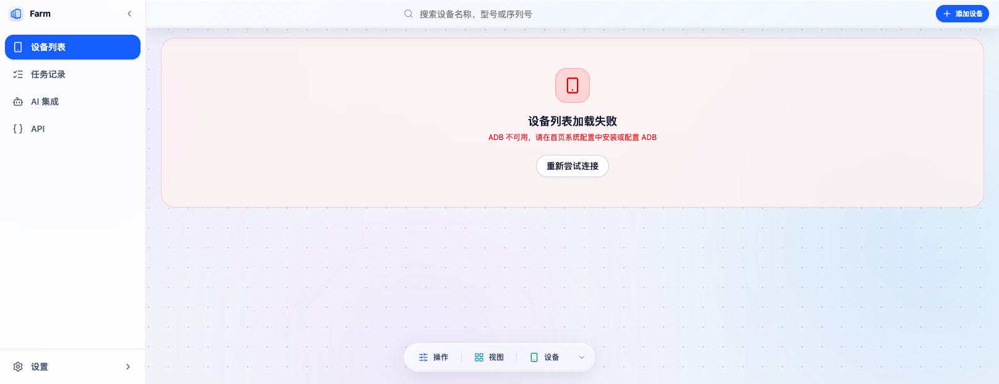
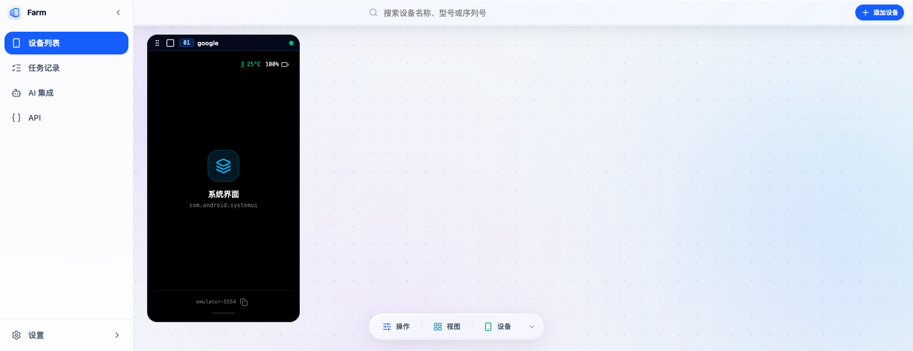
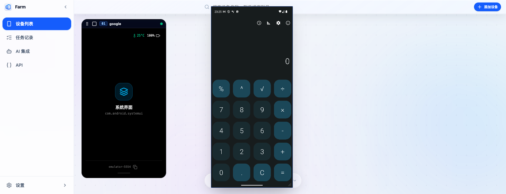
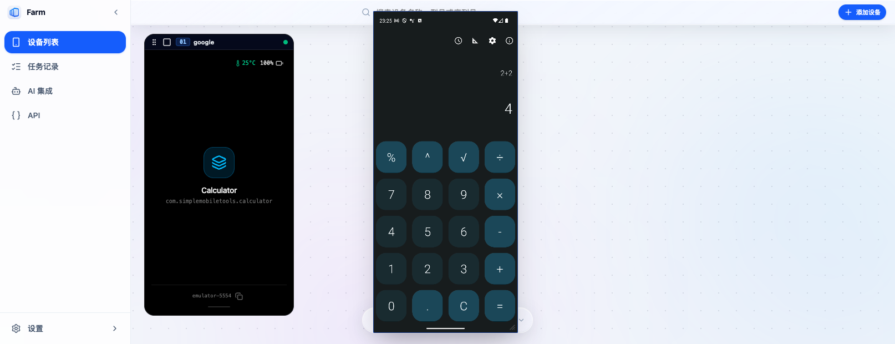
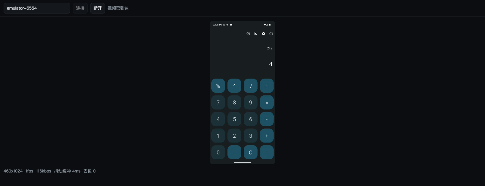

Farm Mac mini 测试报告
2026-11-26 · main 544d2fb
Mac mini / WebSocket / WebRTC 通过
安装包v2026.11.25-beta.1macOS arm64 DMG，SHA-256 已核验
测试设备10.0.0.11macOS 26.7.1 · arm64
Android 设备emulator-5554H.264 · 920×2048 (WS)
WebRTC 实测460×1024 · 84 帧抖动缓冲 4ms · 丢包 0
结果
- Release DMG 摘要匹配，替换安装成功；版本、桌面窗口、原生菜单和服务健康检查通过。
- 配置 Mac mini 已有的 ADB 后发现模拟器。WebSocket H.264 投屏可用，触控计算器输入
2 + 2 =显示4。 - WebRTC PoC 协商成功，接收并解码视频；设备 SPS、ICE connected、84 帧发送和 0 帧丢弃均见服务日志。
- 关闭测试开关后再次正常启动；健康检查为 200，PoC 路由按预期返回 404。
界面证据










未覆盖项
完整 beta 验收尚未完成。版本任务记录 beta 服务实例 8081 未提供，因此通道隔离、通道切换和应用内更新没有执行；Windows 原生测试也未覆盖。不得将本次 Mac mini 结果视为整个 beta 版本验收完成。
SSH 屏幕截图受 macOS 权限限制；界面截图来自测试界面的浏览器实际渲染，原生窗口和菜单另由 AppleScript 确认。详细步骤和脱敏日志见 steps.md 与 logs.txt。